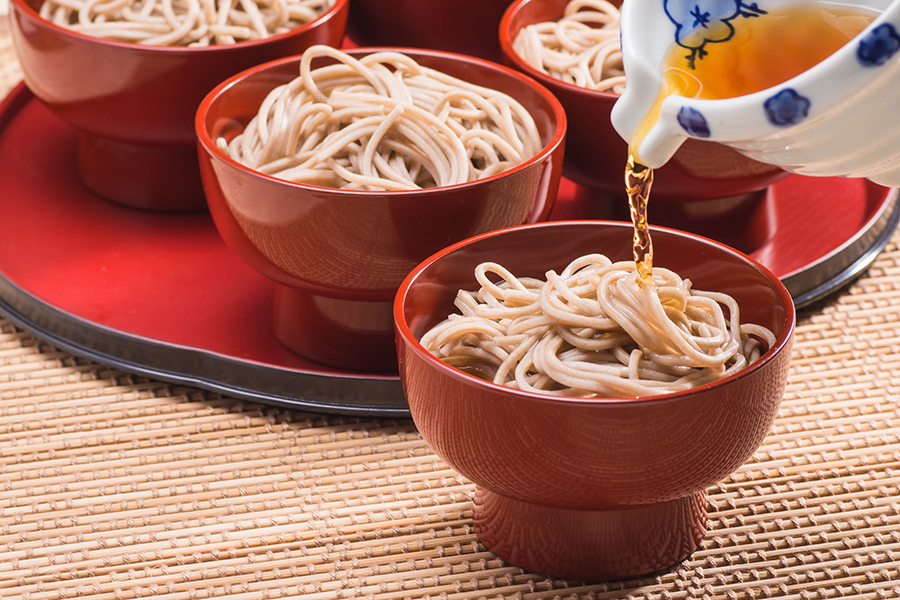

特産品


わんこそば
一口大の温かいおそばをお椀に放り込み、薬味を少しずつ入れながら食べ、お客様が満足するまで何杯でもお代わりをして楽しむ郷土料理です。
盛岡市、花巻市
じゃじゃ麺
独特の平麺に、特製の肉味噌とキュウリ、ネギをかけ、好みに合わせてラー油やおろしショウガなどをかけてたべる郷土料理です
盛岡市
まめぶ汁
クルミや黒砂糖を包んだ団子（豆部）を、野菜、焼き豆腐、油揚げ、かんぴょう等と共に昆布と煮干しの出汁で煮込んだ郷土料理です。
久慈市、山形町など

福田パン
正確には店ですが、約50種類ほどの中から好みの具材を選んで注文すると、店員がその場でコッペパンにサンドしてくれます。
盛岡市
瓶ドン
宮古の旬の食材を牛乳瓶に詰め、ごはんにかけて食べる料理です。宮古市内数店舗で提供され、お店によって個性的な瓶ドンが味わえます。
宮古市
恋し浜帆立バーガー
大船渡のブランド帆立、恋し浜を使用したご当地バーガー。肉厚で甘味のある上質な帆立が丸ごと1個入った帆立コロッケにタルタルソースをかけました。
大船渡